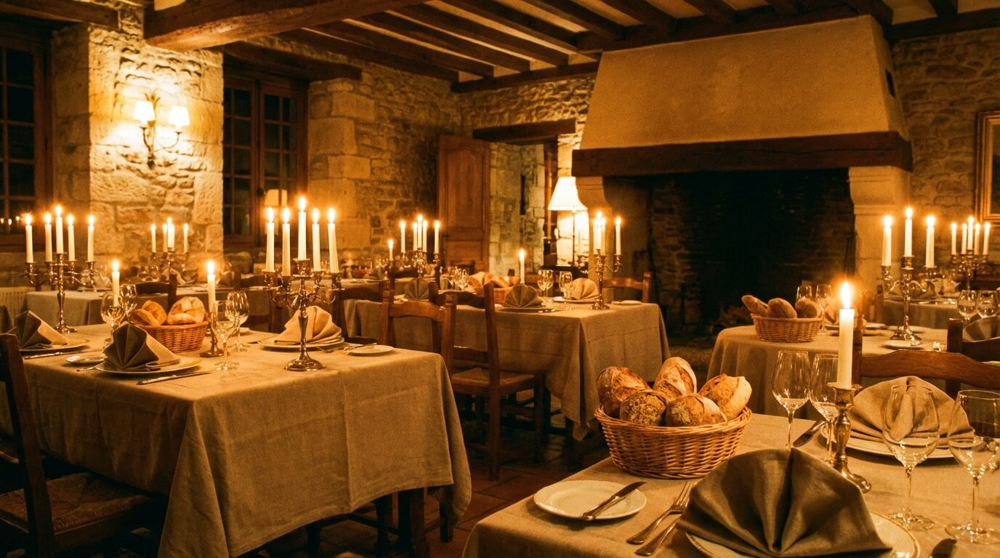

Scroll om te zien
Welkom bij De Gouden Vork, waar traditioneel vakmanschap en moderne culinaire creativiteit elkaar ontmoeten. Onze chef-koks werken uitsluitend met seizoensgebonden, lokale ingredienten. Reserveer vandaag en beleef een onvergetelijke avond.
Van een uitgebreide lunch tot een intiem prive diner — elke ervaring bij De Gouden Vork is een culinaire reis.
Een verfijnde lunchervaring met seizoensgebonden gerechten, huisgebakken brood en verse soepen. Ideaal voor een zakelijke lunch of gezellig samenzijn op het midden van de dag.
Ons avondmenu vertelt het verhaal van het seizoen. Drie tot zeven gangen met bijpassende wijnen, bereid door ons team van gepassioneerde koks. Elke avond een nieuw hoofdstuk.
Een exclusieve eetervaring in onze besloten ruimte voor maximaal 18 gasten. Persoonlijk menu, eigen sommelier en een ambiance die volledig op uw wensen wordt afgestemd.
De keuken van De Gouden Vork bij u thuis of op locatie. Van intimate feesten tot zakelijke evenementen, wij verzorgen hapjes, hoofdgerechten en desserts op het hoogste niveau.
Elk kwartaal een geheel nieuw menu dat draait om de beste ingredienten van het moment. Onze chef haalt dagelijks verse producten van lokale boeren en ambachtelijke leveranciers.
Onze sommelier selecteert wijnen die de smaken van elk gerecht versterken. Van klassieke Bourgognes tot verrassende natuurwijnen — laat u verrassen bij elk glas.
Tevreden Gasten
Jaar Ervaring
Gerechten per Seizoen
Google Reviews

Sinds 2011 is De Gouden Vork een culinair thuis voor liefhebbers in Amsterdam. Ons team van chef-koks combineert klassieke Franse technieken met een eigentijdse, Nederlandse twist. Elk gerecht wordt met precisie en liefde bereid.
Wij geloven dat goed eten begint bij goede ingredienten. Daarom werken wij samen met lokale boeren, vissers en kaasmakers die dezelfde passie voor kwaliteit delen als wij.
Meer dan 3.000 gasten gingen u voor. Lees hun ervaringen.
"Het zeven-gangenmenu was een reis door de seizoenen. Elk bord was een kunstwerk, elke smaak was een verrassing. De sommelier koos wijnen die ik zelf nooit zou hebben geprobeerd. Uitzonderlijk."
"Ons prive diner voor 12 gasten was onvergetelijk. Het team heeft alles tot in de puntjes verzorgd — van het persoonlijke menu tot de bloemdecoratie. Mijn moeder was diep ontroerd."
"De lunch bij De Gouden Vork is mijn wekelijkse ritueel geworden. De soep van de dag is altijd verrassend, de bediening is warm en persoonlijk. Het beste adres voor een zakelijke lunch in de stad."
Een kijkje achter de schermen — waar vakmanschap en smaak samenkomen.



Alles wat u wilt weten over dineren bij De Gouden Vork.
Wij raden reserveren sterk aan, vooral voor diner en weekenden. U kunt online reserveren via onze website of telefonisch bellen. Voor lunch op doordeweekse dagen zijn er vaak nog plekken beschikbaar zonder reservering.
Absoluut. Onze keuken werkt met plezier aan vegetarische, veganistische en glutenvrije varianten van ons menu. Geef uw dieetwensen door bij het reserveren, dan stemmen wij het menu hierop af.
Onze prive ruimte biedt plaats aan 6 tot 18 gasten. U kiest samen met onze chef een op maat gemaakt menu. Wij regelen de volledige avond inclusief wijnbegeleiding, bediening en eventuele decoratie. Neem contact op voor beschikbaarheid.
Ons driegangenmenu begint vanaf 65 euro per persoon. Het seizoensmenu van vijf gangen is 89 euro, en het volledige zevengangenmenu met wijnbegeleiding is 135 euro. Lunch is beschikbaar vanaf 28 euro per persoon.
Op loopafstand vindt u parkeergarage Centrum. Wij adviseren om met het openbaar vervoer te komen — tramhalte Keizersgracht is op 50 meter. Op de fiets? Er is voldoende stallingsplek direct voor de deur.
Reserveer vandaag nog uw tafel en laat u verrassen door de smaken van het seizoen. Eerste keer? Onze chef verwelkomt u graag persoonlijk.
Reserveer Uw Tafel